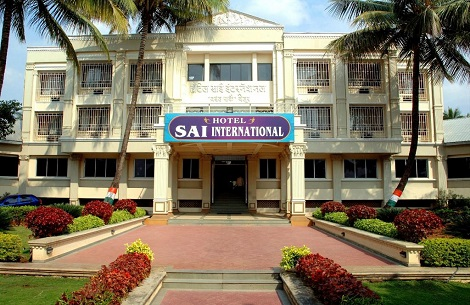

A need-oriented enterprise, Hotel Sai International is a wish-fulfillment of the Gen-next aspirant. Started in 1993 on barren land in a hut like dwelling, Hotel Sai International persuaded food lovers to take its makings recurrently. Hordes of people started coming from about 40-50 kms to enjoy the delicious tongue teasers. In the origin & development of this Endeavour, the ascending phases are markedly observed. Expansion in the consistently growing customer size made us construct a spacious building in the years 1996-97. This location now has become so popular that it has got the status of major landmark on the National Highway No. 4., ( Pune - Banglore Highway)
Initially popular for Punjabi and Maharashtrian esp. Kolhapuri dishes, our hotel became unanimously favorite in Veg & Non-Veg in the due course of time. We feel pride to have a rich bar with us. At the backdrop of our hotel you can see nature in its uninterrupted mood through hill and lush green farmlands. You can view from close the routine happenings on highway avoiding noisy echo of the traffic. We bestow on you 600ft. front parking with security guards.